Make it easier for people to identify songs that they remember the name of. The basic premise of this app is a Shazam that works with other means of identifying music with a focus on humming, incomplete lyrics and non-official musical sources.
Week 1 Website Creation + P1 Ideation Research
For the first week, we were tasked with researching ideas for our project, creating a process website, and exploring different tooling options.
Music Finding App
Goal
Why I thought of it
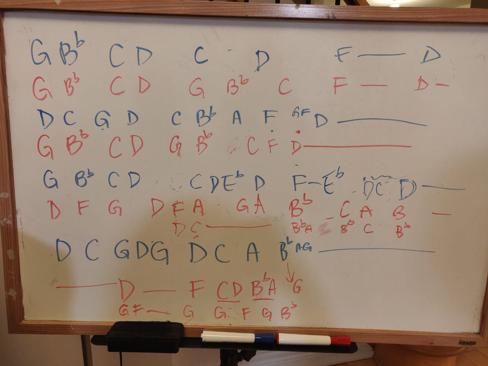
Personally, I often find myself wondering where a snippet of a melody came from. This is especially true since some of the music I listen to is both not English and not available in the mainstream. The only person I have to turn to for answers is my sister; we somewhat have established a system where I’d text her the notes using letters, dots and dashes for rhythm.
Potential Inspiration
- Shazam
- The idea is basically a shazam that would work with people’s humming as well as official tracks. The simplicity of Shazam's UI is its best point.
- The con of Shazam is that it is reliant on official recordings.
- Midomi
- Searches user-contributed recordings to find the song. Users can help the next person looking for this song by singing it in the studio, recording and naming it.
- Incomplete archives, reliant on user-recordings, not mobile friendly
- Musipedia
- Gives you the ability to play the tune with several note-related searches. These include a keyboard search (strictly notes), a contour search (the general note pattern of the song), using a flash piano, or a rhythm search which you can use to hunt for a song by rhythm alone. The Musipedia engine will convert it into a general “note-contour” line, and algorithmically run through its library of music looking for a match.
- Outdated UI that's not mobile friendly nor engaging.
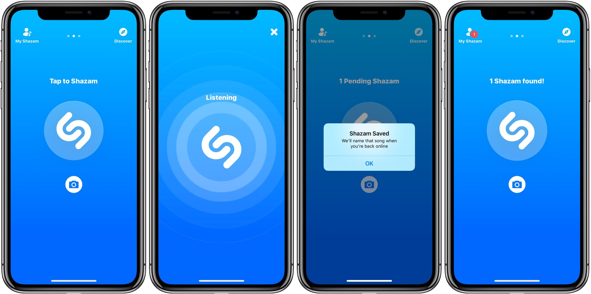
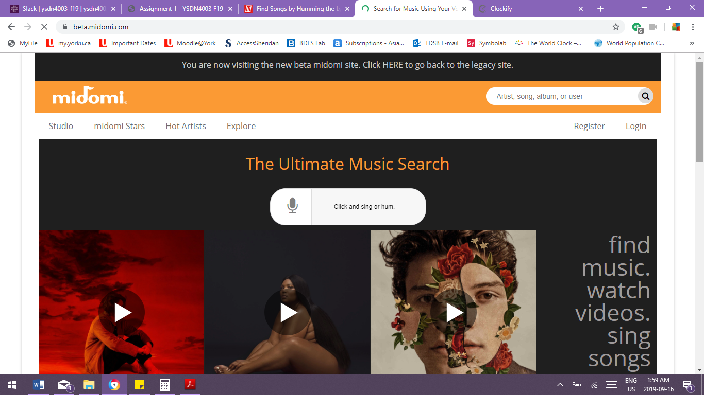
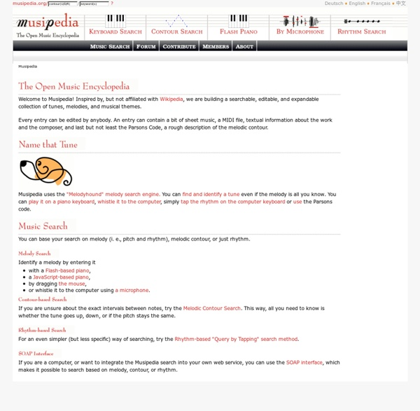
Features To Have
- Easily record user humming/musical input
- Search online sources and personal library
- Connect to Spotify/ITunes
- Record what’s been hummed before to archive and contribute
- Have a widget feature
- Offer forum for unidentified snippets in community
Speculative Wall Painting App
Goal
Offer a way to envision murals without the permanent commitment. An app that allows people to draw on their mobile devices and then project said image onto any surface. Ideally, it would be made of four pieces that, when setup with requirements, create a 'canvas' of any size. Realistically, it's can simply be a companion app for a mini projector.
Why I thought of it
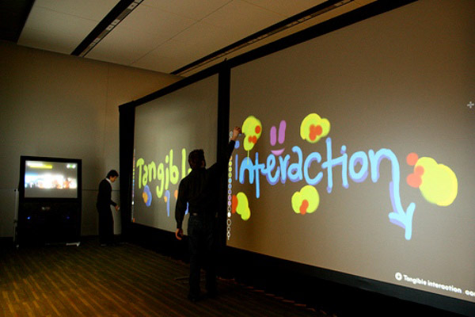
It’s something out of a fantasy, futuristic movie that is actually just a simple luxury. As a child, I had always wanted to paint my room something intense and cool but my parents didn’t want me to touch the walls. I also wasn’t confident in my painting skills and how much I could commit to one theme. The product and app would allow kids to enjoy ‘drawing on the walls’ without the permanent cost. It’s also good for people who want to paint their walls but cannot decide what color they would want or how it would look. It makes customizing spaces easier
Potential Inspiration
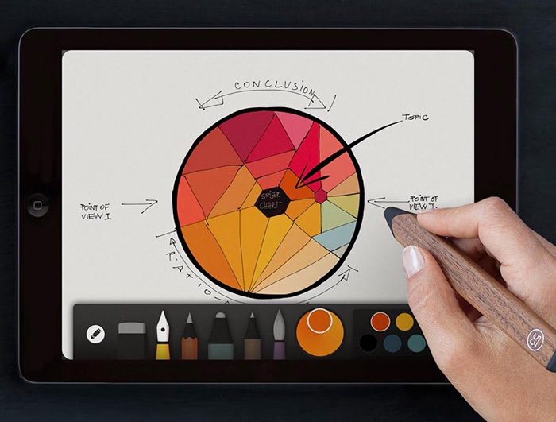
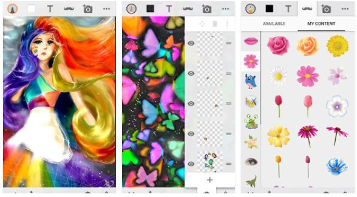
- Paper App
- Simple and straightforward UI,
- Navigation is slightly confusing and not very child-friendly
- Sketch n Draw App
- A very versatile drawing app for mobile. Offers a great variety of tools (including layers!) and customizable features. Users can save creations and share them.
- Navigation is slightly confusing and not very child-friendly
Features To Have
Main interface would act like a drawing application, however, it would have a section that deals with the specifics of projection
- Would be able to set up schedules that automatically switch images like a slideshow
- Able to set single color backgrounds easily
- Draw and have it directly reflected

Expiry Date App
Goal
Reduce unnecessary grocery shopping and letting all of our food expire, contributing to food waste. An app that helps people keep track of what's in their fridge, the freshness of ingredients and propose solutions for ingredients that are going bad.
Why I thought of it
My parents love to grocery shop, buying whatever is on sale. Then, they come home to realize that they already have 3 more bags of corn in the freezer. Additionally, since we do not eat the same thing all the time, this surplus of ingredients are shoved to the back and left to rot. One of the most commonly asked questions in my house is "is it expired?" The same is said for leftovers. Sometimes, how long We need a fridge or some form of method that will keep track of what we've bought and what should be eaten.
Potential Inspiration
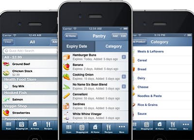
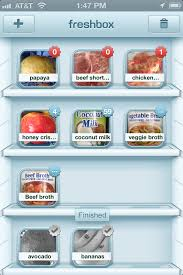
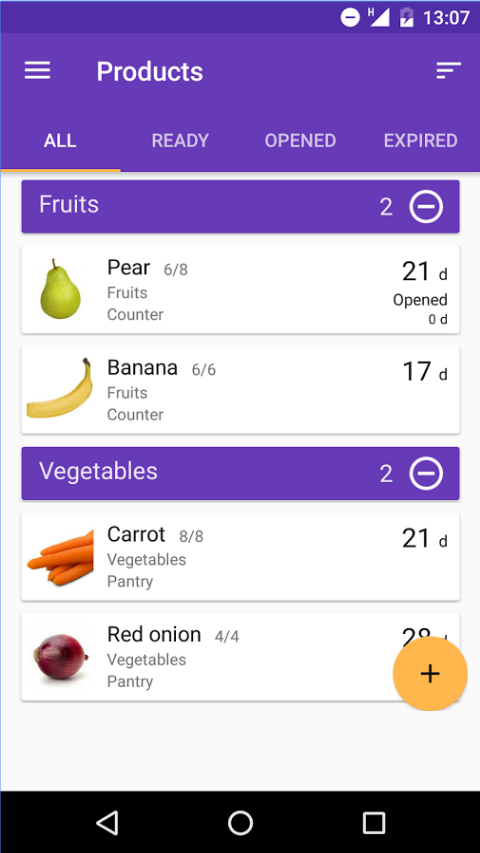
- Fridge Pal
- Creates shareable grocery lists, keeps inventory of what you have, provides notifications on when items expire, search for recipes, plan meals (and needed ingredients) for your family. Includes a barcode scanner to check against products in the store. Very comprehensive.
- Navigation is slightly confusing and not very child-friendly
- Freshbox
- This virtual refrigerator allows users to take photos of individual items, adding the name, shelf life, and expiration date to help you know when you need to use each item. Users can set an alarm that alerts them when the food needs to be eaten. Once the photo has been created, it is added to the virtual shelf and can be seen at a glance to provide an overview of what is in the fridge. Once an item is used, the photo is grayed out rather than deleted, so that reentry of the item is easy when it is re-stocked.
- Requires a lot of manual input that users may not be inclined to do.
- Best Before
- Automatically adds expiry date and other information through a barcode scanner. Color-coded and simple UI for organization.
Features To Have
Ideally, this app would be paired with a fridge to help with the detection and upkeeping of the inventory (reduce manual input)
- Shareable grocery list
- A "floormap" of where things are in the fridge (all meats are in certain drawers, where desserts are etc)
- Automatically add what was on the grocery list to the inventory list, along with expiry dates
- Provide reminders for when groceries are expired
- Propose recipes that optimize/include ingredients near expiry
- Barcode scanner
Week 2 HMW Analysis + Statement of Intent
In the second week, we spent the class doing a How Might We workshop. We had to analyze the results and decide upon a project statement.
How Might We Analysis
The “How Might We” Workshop was an exercise in pooling ideas about my topics from my peers. This encompasses either ‘how might we include’ to ‘how might we expand’. Overall, I found that while there were many points that I had already considered in my original idea proposal, there were also many other features that I had not considered. As I thought about integrating all the HMW functions, a clearer vision of the applications began forming.
PDF of scanned HMW submissions.Music Finding App Summary
The greatest challenge for the Music Finding App is the search function. There were many suggestions on how to improve and expand on a basic search as well as what to display within the results. One of the most crucial suggestions I received was to visualize the match and percentage. This shows whether or not the search is searching the correct melody, how effective the method is and allows users to compare similar melodies.
Other suggestions focused on integrating the service with existing music libraries and platforms to reduce the strain of migrating to a different music platform. This was already in my initial plans as the app would focus on giving answers to a search rather than serve as a hub for music. However, I did agree with the idea of fostering online communities to facilitate difficult searches or allow people to easily send snippets of searches or songs to their friends.
- Search
- Combine different types of search methods
- Account for different music skill levels
- Encourage users to improve search query
- Use genre, artist, album etc. to find music
- Lyrics suggestion
- Visualize match percentage and pinpointing matched sequence
- User contribution/crowd-source to expand library
- Integrate with other platforms and music libraries
- Keep track of found songs
- Propose new/similar sounding music
- Online community
- Encourage users to share found music
- Send out samples to friends and others to help identify songs
- Send song snippets with song information
- Integrate with other technology (smart watch, AR)
Wall Painting App Summary
Perhaps the features the Wall Painting app needs is a live version. Many HMW suggestions requested some form of live interaction whether it’s gesture-based navigation or live drawing. While I’m not sure how the semantics of having a purely interactive live screen where people may draw using gestures, I would definitely consider a collaborative mode. Initially, I had assumed that many users would draw on one device that could live cast the screen. However, the HMW has led me to explore multiple devices with multiple users sharing one ‘screen’ that can be cast live.
There were many suggestions involving AR or a more 3D approach. Despite how cool this could be, I’d like to focus on the 2D aspect and the multiple uses. For an interior design purpose, I believe 2D is sufficient in giving users an overview of what their walls may look like. A suggestion I really liked was being able to sample colours from surroundings. I do realize that many of the suggestions around simulating the environment (accommodating various lighting situations, real world colours etc.) would be reliant on the strength of the accompanying product and how it functions.
- Live preview and drawing
- Animated drawings
- Use for other industries (interior design, art therapy, educational)
- Navigation
- Use haptic/physical gestures and interactions
- Gameify nav projection for children
- User collaboration
- Allow users to find inspiration/share creations
- Allow users to draw to the same surface simultaneously
- Integrate environment
- Sample colours directly from surroundings
- Account for various surfaces, textures and lighting
- Measuring walls feature
- Simulate different furniture and surfaces
- Conver artwork to print or other mediums
- Expand to update multiple projections simultaneously
Wall Painting
What is the primary goal of your screen-based/application project?
The primary goal of my screen-based project is to allow users to easily display what’s on their screen onto any size flat surface.
Which medium/platform are you focusing on, and why?
I’m focusing on a tablet to projector medium because I assume that most people, when aiming to draw digitally in a flexible, would use their tablet due to its screen size and portability. A secondary medium is the phone which has become the central hub for all applications. The ‘projector’ is also an important platform since this is where the work will be projected on. As is recommended, there is a possibility that the projection is also interactive rather than a static image.
Keywords
Speculative, Projection, Live Art Installation, Interactive
Who is the intended audience?
The intended audience is children to young adult, geared towards the creative. The application’s primary goal is to project artwork onto surfaces without the permanent commitment of paint. A key component is the artwork, thus, it is initially targeted to those interested in viewing artwork on a larger surface. A secondary audience is the general public who may use the application for interior design or other display purposes.
In which way will users be encouraged to use your interface over and over again?
The joy of the interface is in its simplicity and customizable options. This will allow the user to quickly achieve their end-goal (a projection of artwork of their choice) faster, leading to greater user satisfaction. Customization offers flexibility and the opportunity for multiple uses.
Based on your research and the How Might We workshop, what is the unique value proposition of your digital solution?
The Wall Painting App opens a variety of possibilities. It can be used by nearly anybody for any number of reasons-leisure, educational, interior design. Additionally, it is a great platform for collaborative art. In my ideal product scenario, the product would be scalable and lightweight as well.
How will you evaluate the success of your interface?
The learning curve for this speculative wall painting project should be very slight. The user should find joy in being able to see their work projected on a larger surface with ease and not be frustrated with the process. Since part of the targeted audience are young children, I would like for them to be able to easily use the app, with or without parental supervision and be awed.
Week 3 Crazy 8 + Wireframes
During class, we split into two groups and performed a Crazy 8 workshop in which peers drew quick sketches of our chosen topic. I had trouble deciding which topic to proceed with but settled with the Wall Painting App as it was very speculative and open to many possibilities.
Crazy 8s
I found that the Crazy 8 workshop was quite helpful. It consolidated the intentions of the How Might We Workshop with potential ideas. By asking others to visualize what the interface may look like, I am given insight as to what they imagine is grouped together, what's necessary or what features should be available. This provides preliminary ideas while also bringing to light more How Might We's. The sketches also raised questions that help to narrow the final design. For example, for the Wall Painting App, I had to determine where the user interface and interaction would occur - in the application or in the projection. These two interfaces are very different and apply quite different experiences.
PDF of scanned Crazy 8 submissions.Low-Fidelity Mock Ups
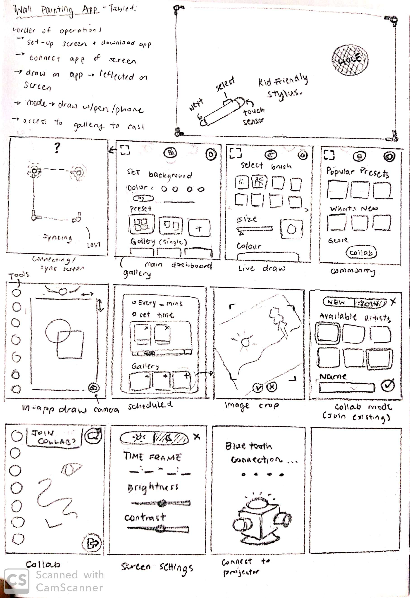
While drawing my low-fidelity sketches, I had encountered obstacles on certain aspects of the application. I realized that there were many more features than I originally thought. My initial sketches included a carousel-style navigation, however, I quickly realized that it would not be the clearest way of organizing the app. I had to also revisit how the set-up process with the projector would occur, for the initial and every consequent time the projector is resized. This brought to my attention to consider how often features would be used and switched between. I also had to consider that every action must either be saved or discarded before proceeding.
Mid-Fidelity Figma Mock Ups
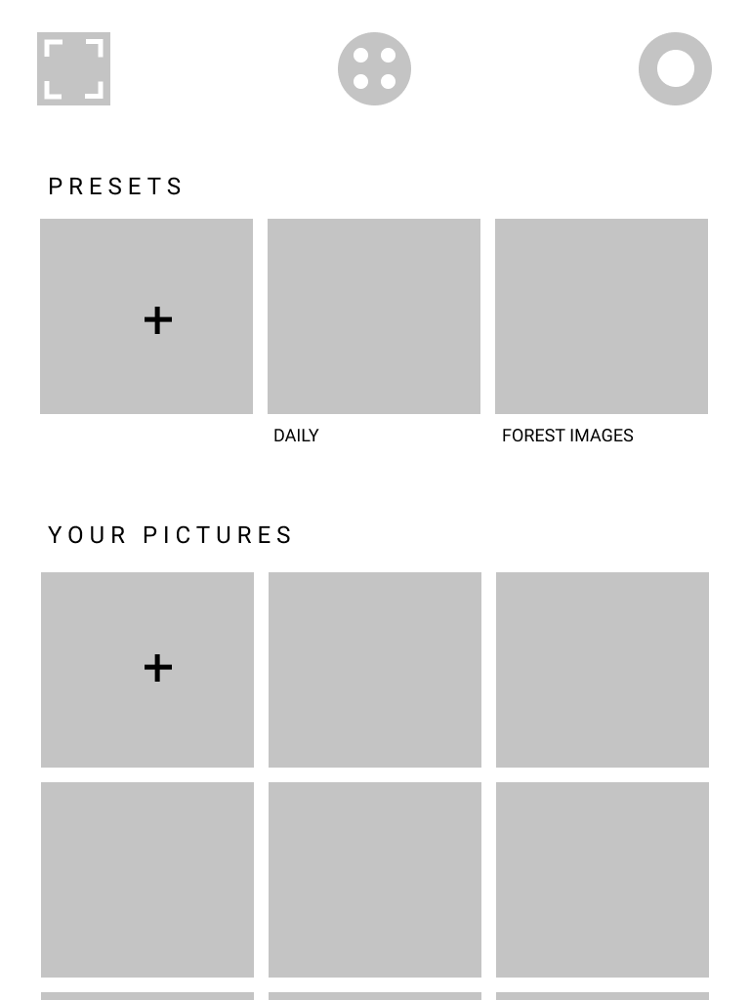


Mid-Fidelity Landscape Mock Ups
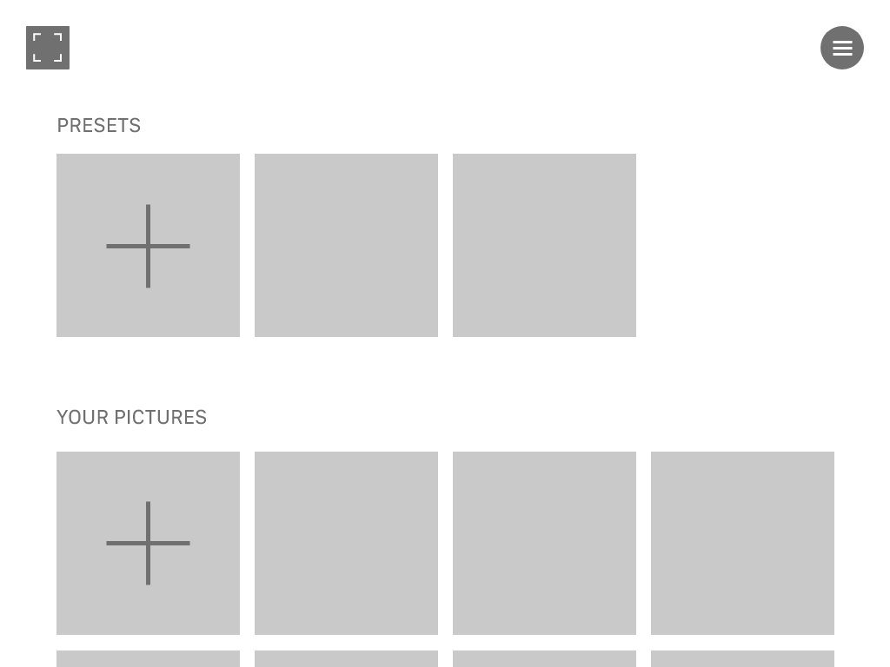


Week 4 Figma Wireframe
Presenting Mid-fidelity Wireframes to the class
Presentation Reflection
We presented our Figma prototypes to the class for feedback. I realized, after seeing the work of my peers, that a better approach to my mid-fidelity wireframes was to explore individual user flows. As I continued working on the prototype, I came across issues with understanding the steps for resizing the canvas. This made my realize that I had to step back and create a UX map to flesh out the user experience. The UX Map really helped me to visualize all the pages I needed, including error states, pop ups, and the overall functionality of the app. Also, I shifted to having a guided userflow as I realized how simpler it made planning and focusing on specific user experiences.

Introducing DOTwall
As I created the mid-fidelity, I had to also create a 'language' for the application. I was deciding what tone I wanted the copy to have particularly for instructions, buttons and pop-ups. In the midst of this, I had to create terminology and an identity for the app. After some rough brainstorming, I settled on the name DOTwall. DOTwall is an abbreviation for Drawing On The Wall and uses the concept of the 4 points that make up the projection/screen. With the concept of wall, the art created in the app is referred to as paintings and users as artists. I used this language to cohesively tie the concepts together and establish a friendly tone for kids. I also maintained a mainly white color palette to compensate for the colorful paintings that will populate the dashboard.
DOTwall Mid-Fidelity PrototypeThis mid-fidelity prototype covers onboarding, creating a mural and a preset, error states, casting and editing murals, and collaborations (creating, joining, chat, etc).
Week 5 Reading Week
Over the Reading Week, I worked on covering more sections in the prototype and converting it into a high-fidelity prototype.
Choosing the Aesthetic
I settled on a 'clean and simple' aesthetic, using white as the background and very minimal color. I anticipate that the paintings made by user would be very colorful and did not want too much noise.However, to cater to the younger audience that will use the app, I used 4 different colors as accents. The two primary colors were a light pinkish red and sky blue, used to differentiate actions and indicate a 'default' action. A green is used to indicate selection or positive actions such as saving or creating a painting. Orange is used for things that are not selected, acting as opposite to the green.
The style of the icons are flat and simple. Navigation specifically kept the abstract and simple shapes. I wanted to introduce simpler shapes as the icons, abstracting them until they were made up of only one shape. For especially young kids, I believed this would make it easier to understand; this green square does this thing. I also belatedly realized this meant menu navigation would require labels for those who can read.
I had already expected it but buttons would have a drop shadow to be floating above other elements. The main rationale behind this was that there were certain buttons that had to be fixed to the page (i.e. the tool bar, scrolling through the list of paintings in the preset etc). Since the header did not have a background either, drop shadows to indicate buttons against changing background was ideal. Maintaining the chosen aesthetic, the colors on the buttons were indicated by a stroke rather than a fill.
The Design System
This week we learned about the design system. Learning about the atom > element > page structure helped me to organize all the components in my UI and identify where I can use recurring icons or themes. Figma as a software was especially helpful in managing this and creating easy-to-change components.
Week 6 Refining the Prototype
Refinements included adding more features to the draw in the app feature and designing the settings and community pages.
Changes to the Prototype
Adding missing features
During this process, I had difficulty fitting certain elements into other pages. Particularly was the settings page which needed a Day and Night setting along with all the other connection and account settings. The initial design tried to mesh these together but it was too cluttered when I tried to match the UI. My solution was to include the lighting setting first before navigating to the page.
I also had to rethink the process of casting as the missing delete feature was brought up during critique. Thus, the casting UI changed to include two buttons (Edit and delete) along with the initial swiping motion. This made it easier to reapply to other selection instances like when saving paintings from the community. It also diversified the process of casting better, giving users to ability to choose whether or not they would like to edit first before casting. At this point, it became clear that there is a high likelihood that users would always need to resize paintings to fit their dotWall canvas so the resizing page consistently appears when a user casts.
Missing features that I had not initially planned was how to turn off the dotwall, clear it, or easily switch between them. This was solved by a simple drag down that contained information about the current dotWall being used. It was suggested that the background of the application change according to the wall and while this was an interesting concept, the resulting accomodations that the UI needed were troublesome to my aesthetic. I believed that riding the main dashboard of the colorful navigation icons would make the interface too bland, especially since the default color would be white. With more time, I may be able to find a satisfactory solution to this.
Week 7 Missing
Missing as I was not in the country at the time
Week 8 The Final Prototype + P4 Animation
Putting the finishing touches on the High Fidelity prototype and beginning the animation stage.
dotWall High Fidelity Prototyp
Testing Animating Techniques
This week, I experimented with how to convert my Figma application into an animation. While the process was rather straightforward using AEUX, I realized that there were small things that did not translate well. Thus, I'd recreate them in After Effects as best as I could. I learned and tinkered with the concept of compositions within After Effects. Though I'm familiar with animation concepts, I had never extensively used After Effects. The first attempt resulted in a loading screen.

I had to figure out what animation tone I wanted in general, once again focusing on simple transitions such as fades and slide ins but with still some ,inor fun elements. Using the name of the app, dotWall, I decided to incorporate the circle among my animations.
Week 9 P4 Animation
Animating the basics
My biggest takeaway this week was that the animation process was much more tedious than expected. Taking into account technical restrictions, I worked on smaller parts and aimed to put them together after rendering them or integrating it into Figmar to later screen record. However, I had trouble exporting gifs and importing them into Figma without a black background, meaning everything had to be done within After Effects. Testing out rendering, I realized that the gifs rendered at a much slower speed than videos. Thus, I planned on submitting videos for project 4.
The Transition Styles
The main styles I had decided on was the starting circle and a fade. Selected objects would have the green border that has an outlining animation and be raised. This sense of depth was seen aomng the buttons as well. These were realized in the Cast animation. I also decided that a subtle superimposition of the painting into the background of the dashboard upon casting would be an interesting way of implying that the painting was applied. This was similar to the original suggestion of having the wall reflected on the dashboard.
Plans for Animation Submission
- How to Cast Done
- Creating New Paintings Done
- Drawing in App Done
- Menu Navigation Done
- Creating Preset
- Collaborations Done
Week 10 P4 Submission + P5 Plans
Rough video submissions and preliminary ideation for website that uses existing animations. Also, an exploration into GitHub.
Animations
Creating a Painting
Casting Painting
Collaboration
P5 Marketing Website Ideas + Sketches

GitHub Implementation
I had also taken this time to explore using gitHub in order to update my process website remotely. This would be a skill that is helpful for me in the future since github is a well known resource.
Week 11 Website Implementation
Learning Webflow and creating components for the website
Exploring Webflow
The main goal was implementing the main navigational structure of the website. I had envisioned a 'slideshow' style in which sections disappeared or smooth scrolled to show each feature. However, this was extremely difficult to implement since the basic layout required the sections to be within a separate scrolling container. I had to constantly revise my ideas for navigation based on the capabilities of webflow. I had already envisioned what most of the animations would look like so it was a matter of creating them.
Planned Animations
Within my sketches, I planned to create or use a series of animations to demonstrate the capabilities of the application. These animations would use the fixed wall background as a backdrop whenever possible, showing how the app and product would work. I knew that I had to show casting, the two modes of drawing, and collaboration and the ability to have presets. Using my previous knowledge of After Effects, I already had a rough idea as to how I would mock up the real-live drawing aspect of the animations. I simply experimented with the best angles


Week 12 P5 Final website
Assignment Submission Published at dotwall.webflow.io
Reflection
In trying to create this website, I realized the limitations that I had imposed on myself through my design choices within my application. With the white background and color only in the buttons, I struggled to find methods of enlivening my website. Looking back, much of my animations for the website were not derived from the animations I had originally created for the previous assignment. While this makes sense to focus on the fundamental functions, it meant double the work. I also discovered that while Webflow created templates for ease of use, I would have rather preferred the freedom of coding the website myself. Precious time was wasted in attemping to execute page transitions and learning a web application.
Nevertheless, I believe I was able to showcase all that I wanted to within this website. I used Illustrator to create 3D mock ups of the product and AfterEffects to create each animation. Though I struggled with the content, the final result covered the necessary features of the application that initially attracted me to the propsect.